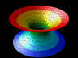
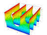
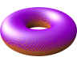
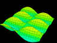
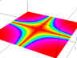
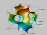

"Eckige Ringe" (movie) by Rainer Wonisch.
"Catenoid" by Carlos César de Araújo.
"Scherk's Surface 1" by Carlos César de Araújo.

"Enneper's Surface" by Brian Tenneson.
"Magic Carpet 2" (movie) by Rainer Wonisch.
"Iced Donut" by Michael Parker.
| DPGraph Math Art Gallery Page 9 |
| Home | Buy | Free Viewer | Legacy Site Licensees Latest news: 12 Nov 2017 | Update to newest version: 19 Dec 2016 Math Art Gallery | Documentation | Links | Privacy | Contact |
More pages of beautiful math art thumbnails:
Newest
13
12
11
10
9
8
7
6
5
4
3
2
Oldest
DPG files: Alphabetically by contributor | Alphabetically by title of graph
"Eckige Ringe" (movie) by Rainer Wonisch. |
 "Catenoid" by Carlos César de Araújo. |
 "Scherk's Surface 1" by Carlos César de Araújo. |
"Enneper's Surface" by Brian Tenneson. |
"Magic Carpet 2" (movie) by Rainer Wonisch. |
 "Iced Donut" by Michael Parker. |
 "Spiralen Auf Zwei Ebenen" (movie) by Rainer Wonisch. |
 "Pretty Waves" (lo-res movie) by Tom Tredon. This is just one frame from the lo-res version. |
"Interferenzen" (movie) by Rainer Wonisch. |
"Ringe Auf Bewegender Ebene" (movie) by Rainer Wonisch. |
"Scherk's Surface 2" by Carlos César de Araújo. Click on Edit in DPGraph for more info. |
 "Ebene Mit Kreuz" (movie) by Rainer Wonisch. |
 Here is an 8D graph -- a 3D array of time-dependent 3D vectors, using color to show a pressure wave propagating through the moving vectors. |
 "Gyroid" by Carlos César de Araújo. An approximation to a triply periodic minimal surface discovered by Alan Schoen. Click on Edit in DPGraph for more info. |
 "Pretty Waves" (hi-res movie) by Tom Tredon. This is just one small clip from the movie. Use DPGraph's Scrollbar to vary A (the speed) and B (the whole graph's amplitude). |
"Schwarz's P Surface 1" by Carlos César de Araújo. Click on Edit in DPGraph for more info, including historical notes by Alan Schoen. |
"Four Point Sphere" by Martin Levenius. To vary the X, Y, and Z coordinates of one of the points, use the Scrollbar to vary A, B, and C. |
 "Schwarz's P Surface 3" by Carlos César de Araújo. Click on Edit in DPGraph for more info. Very high resolution, may take a minute to generate. |